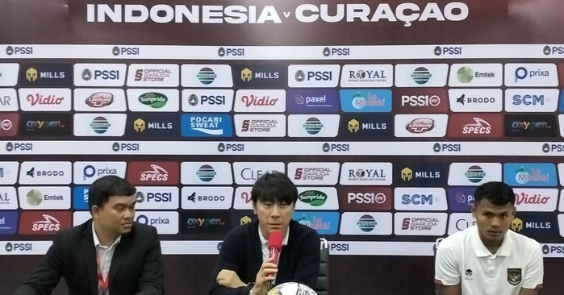

Shin Tae-yong Puji Kerja Keras Timnas Indonesia Kalahkan Curacao
Published by Ulul Mafaza Minggu, 25 September 2022
Conferensipers Pelatih Timnas Indonesia Shin Tae-yong
Pekalongan Indonesia tampil gemilang dengan mengalahkan Curacao dengan skor 3-2 pada FIFA Match Day yang digelar di Stadion Gelora Bandung Lautan Api (GBLA), Sabtu (24/9/2022) malam. Kemenangan Indonesia didapat lewat kerja keras. Tertinggal lebih dulu lewat gol cepat Rangelo Janga di menit ke 7,Indonesia mampu berbalik unggul melalui gol Marc Klok di menit 19 dan Fachrudin Aryanto di menit 23. Namun dua menit berselang, Curacao kembali menyamakan kedudukan lewat aksi Juninho Bacuna. Skor 2-2 mengakhiri pertandingan di babak pertama.
Di babak kedua, Indonesia bermain lebih menyerang. Hasilnya, Dimas Drajad mencetak gol ketiga Indonesia sekaligus penentu kemenangan. Gol Dimas juga dihasilkan dengan proses yang cantik hasil kerjasama dengan Pratama Arhan.
Padahal di laga ini, Indonesia tampil di bawah tekanan tim lawan. Para pemain Curacao yang memiliki postur tinggi besar mampu mendominasi permainan dan menyulitkan Indonesia untuk mengembangkan permainan.
Wajar saja, Curacao memiliki rangking FIFA yang jauh di atas Indonesia. Pelatih Shin Tae-yong juga mengakui hal itu membuat para pemainnya kesulitan di atas lapangan. "Pertama-tama, Curacao FIFA rangkingnya memang di atas kita, jauh ya, secara postur tubuh pun memang lebih baik dari tim Indonesia. Memang banyak hal yang menyusahkan tim kita," kata Shin usai pertandingan.
Namun pelatih asal Korea Selatan ini mengapresiasi kerja keras para pemainnya. Bermain di kandang sendiri membuat pemain haus akan kemenangan."Sampai gol pertama pun kita kemasukan, tapi tetap kita bisa membalikkan skor dan memang punya kehausan terhadap kemenangan di home. Jadi para pemain sangat bekerja keras, oleh karena itu saya terimakasih banyak dan pemain memang sangat baik untuk hari ini," jelasnya.
| AKTIVA | |
|---|---|
| Aktiva Lancar | |
| Kas | 182,753,742 |
| Bank | 145,085,801 |
| Deposito Berjangka pada BANK | 0 |
| Piutang | 779,844,538 |
| Margin.Piutang Ditangguhkan* | -222,920,854 |
| Pembiayaan | 0 |
| Biaya dibayar dimuka | 0 |
| Jumlah Aktiva Lancar | 884,763,227 |
| Aktiva Tetap | |
| Inventaris kantor | 69,653,500 |
| Ak.Peny.Inventaris kantor* | -33,652,377 |
| Kendaraan | 0 |
| Ak.Peny.Kendaraan* | 0 |
| Gedung | 0 |
| Ak.Peny.Gedung* | 0 |
| Tanah | 0 |
| Ak.Peny.Tanah | 0 |
| Jumlah Aktiva Tetap | 36,001,123 |
| Aktiva Lain-lain | |
| Aset Lain-lain | 41,567,500 |
| Persediaan | 426,000 |
| Jumlah Aktiva Lain-lain | 41,993,500 |
| JUMLAH AKTIVA | 962,757,850 |